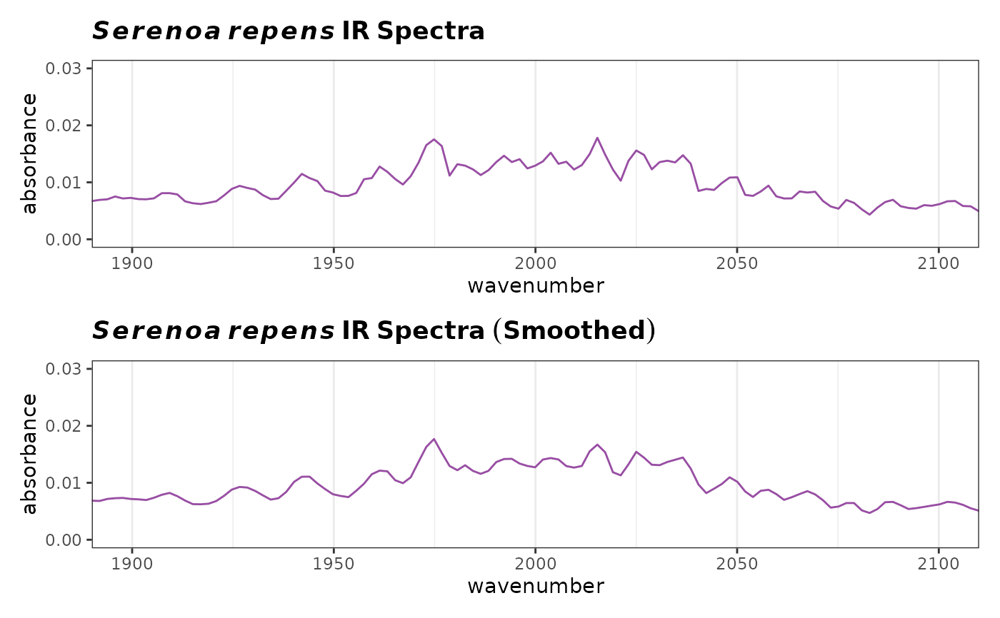

This function is a simple wrapper around the function
sgolayfilt. It allows one to apply Savitzky-Golay
filters to a Spectra object in a convenient way.
sgfSpectra(spectra, m = 0, ...)An object of S3 class Spectra().
The desired m-th derivative. m = 0 smooths the data (i.ei a rolling
average), m = 1 gives the first derivative etc.
Other parameters to be passed to
sgolayfilt.
A object of class Spectra.
Additional documentation at https://bryanhanson.github.io/ChemoSpec/
# You need to install package "signal" for this example
# This example assumes the graphics output is set to ggplot2 (see ?GraphicsOptions).
if (requireNamespace("signal", quietly = TRUE)) {
library("ggplot2")
library("patchwork")
data(SrE.IR)
myt1 <- expression(bolditalic(Serenoa) ~ bolditalic(repens) ~ bold(IR ~ Spectra))
myt2 <- expression(bolditalic(Serenoa) ~ bolditalic(repens) ~ bold(IR ~ Spectra ~ (Smoothed)))
p1 <- plotSpectra(SrE.IR)
p1 <- p1 + ggtitle(myt1) + coord_cartesian(xlim = c(1900, 2100), ylim = c(0.0, 0.03))
sgf <- sgfSpectra(SrE.IR)
p2 <- plotSpectra(sgf)
p2 <- p2 + ggtitle(myt2) + coord_cartesian(xlim = c(1900, 2100), ylim = c(0.0, 0.03))
p3 <- p1/p2
p3
}
#> Coordinate system already present. Adding new coordinate system, which will
#> replace the existing one.
#> Coordinate system already present. Adding new coordinate system, which will
#> replace the existing one.
